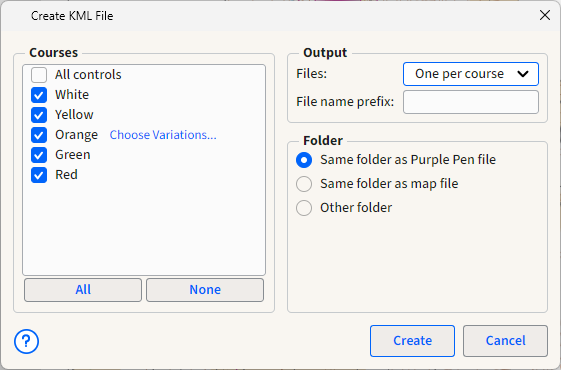

File/Create KML Files...
This command creates KML files for each course that you specify. The KML file contains the real-world coordinates of every control in the course. This can be used to load the controls into another program.

This dialog has several options to customize the result.
Courses section
This section shows which courses will have KML files created. The default setting is for all courses except "All Controls" to be printed. Click the checkboxes next to the courses you wish to print. Click All or None to quickly select or unselect all of the checkboxes at once. If you are exporting a course with variations, select Choose Variations... to select how to export the variations.
For each course, an KML file with the name of the course is created (unless overridden in the Output section).
Output section
Files: Changes whether each course is output to its own KML file, or a single KML file is used for all courses. If a single file is used, it is named with the name of the event.
File name prefix: If something is typed in here, it is prefixed onto the file name of each output file. For example, if you type "Final" in this box, then the resulting files would be "Final-White.ocd", "Final-Yellow.ocd", etc.
Folder section
This section determines in which folder (directory) the course files are created. There are three choices:
- Same folder as Purple Pen file. The files are placed in the same folder as the Purple Pen (.ppen) file for this event. This is the default choice.
- Same folder as map file. The files are placed in the same folder as the map (.ocd/.xmap/.omap) file for this event.
- Other folder. Any other folder. If you chose this, a "Select Folder..." button appears which you can click to select any folder.
Other buttons
Create: This button creates the KML files. The dialog box closes.
Cancel: Closes the dialog box without creating anything.